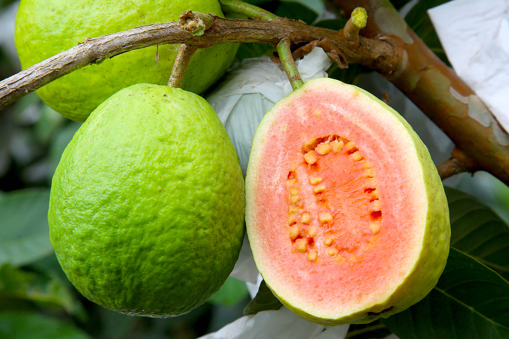

Carlópolis, a Capital da Goiaba
2 de Agosto de 2024 09:13
No ano de 2023, a cidade de Carlópolis localizada no Norte Pioneiro do estado do Paraná, foi declarada a Capital da Goiaba por Lei Federal. Neste post iremos comentar sobre a qualidade do plantio e as técnicas utilizadas para realização de tal.